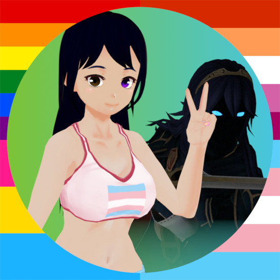
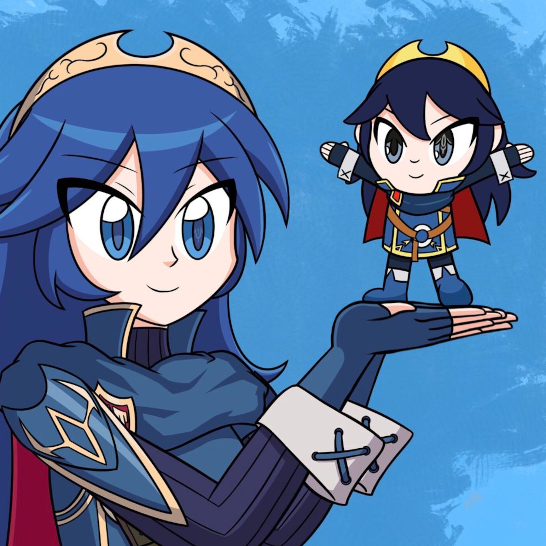
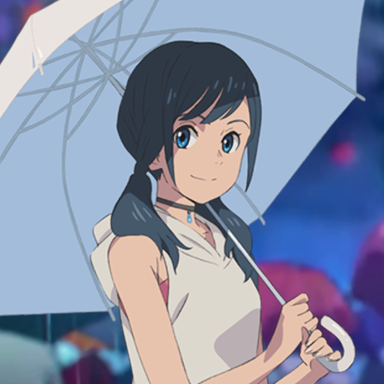
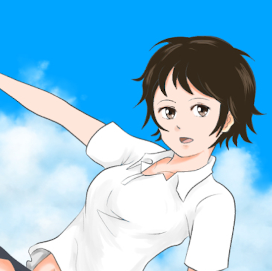
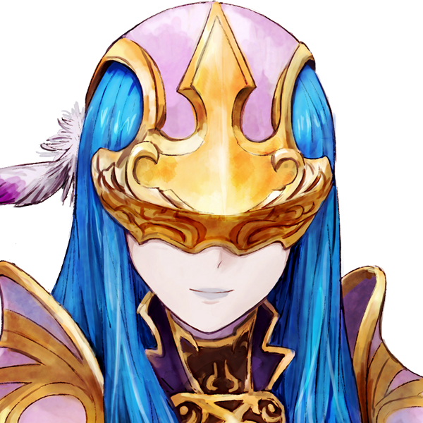
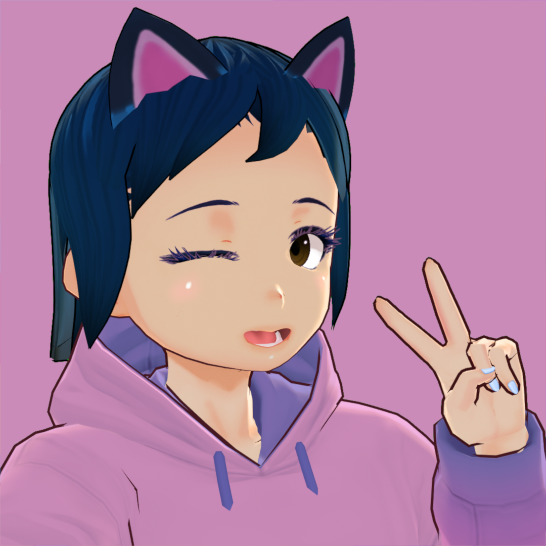

|
butterfly &the Tokyo Mirage System 🌃 or the Shibuya System |
|  |
Lucy (or, Present Lucina)you know me as butterfly. i'm very nerdy and geeky but many see me as a sweet girl. also i'm easily embarrassed.
type: original singlet |
|  |
Lucina, Exalt of Ylisse (also known as Future Past Lucina, FPL)I came from the dark future of another world, and I became part of this system. I sincerely wish and fight for this world's existence and betterment. It seems I formed due to personal issues that Lucy was going through, and I wish to be a help to her.
formed by: Lucy |
|  |
Hina Amano / 天野陽菜hey there im hina!! im told im really chipper and i love working with lucy and everyone else!!! what i want to do is help people through tough times, i want to turn their rainy days into sunny days! ☀️
type: quoigenic fictive / Weathering With You |
|  |
Makoto Konno / 紺野真琴[She hasn't written one yet, the language barrier is still a bit of a problem]
formed by: Hina |
Tsubasa Oribe / 織部つばさhi, my name is Tsubasa Oribe, im a 17 yearold schoolgirl (she her) and i want ot be an idol because iiiiii want to pelp hheople. lucy says im from tokyomirage sessions #fe and that i was endogenic fictive or something???? anyway, i get embarrassed easily but i lvoe singing!!!
type: endogenic fictive / Tokyo Mirage Sessions #FE |
|
|  |
CaedaI am a Mirage, an illusory hero under the help of Tsubasa Oribe. I help her in all things, and I learn a lot about the modern world through her.
formed by: Tsubasa |
|  |
Akari Shirakawa / 白川あかりWhat happens when Lucy, Hina, and Tsubasa make a combined member? Me! I'm Akari, and I love to nerd out, sing, and stream!
formed by: Lucy, Hina, and Tsubasa |